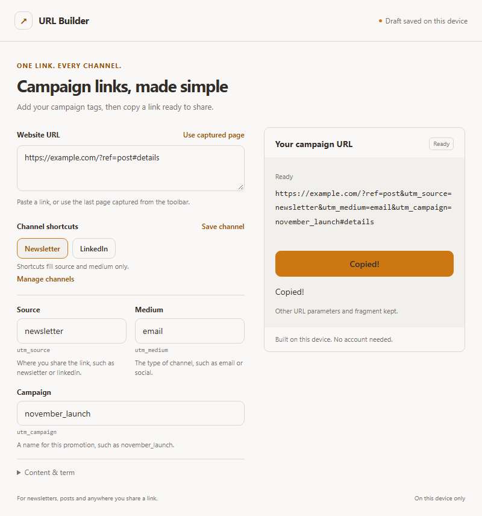

URL Builder
URL Builder is installed.
Your next link is ready to tag.
Pin it in Chrome, then open a page you want to share.
Your next newsletterA page you want to share.
Chrome toolbar illustration. Use the controls in your own browser.
1. Open Extensions
Click the puzzle icon at the top right of Chrome.
2. Pin URL Builder
Click the pin next to URL Builder.
3
Click the URL Builder icon
It opens in its own tab with the current page’s URL. You can also paste a link.
Choose a channel and campaign. Copy.
Pick Newsletter or LinkedIn, enter a campaign name, then click Copy URL. Paste the result into your newsletter or post.
4Copy URLUse this button in the builder tab.

Actual extension screen after copying a newsletter link. Channel shortcuts fill source and medium.